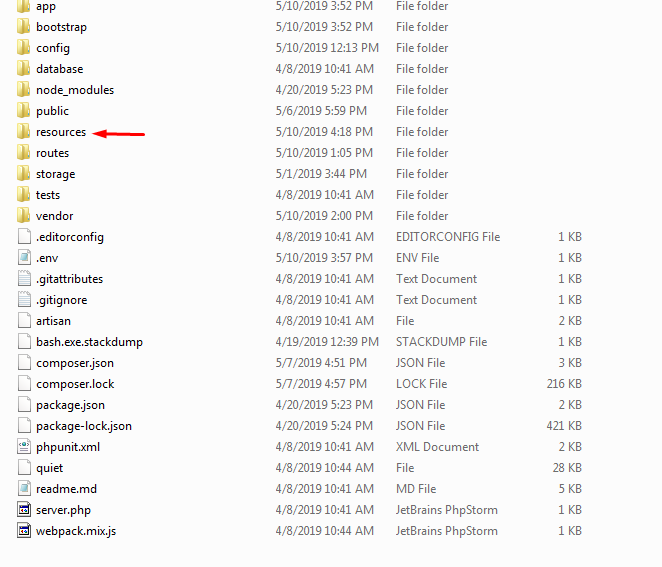
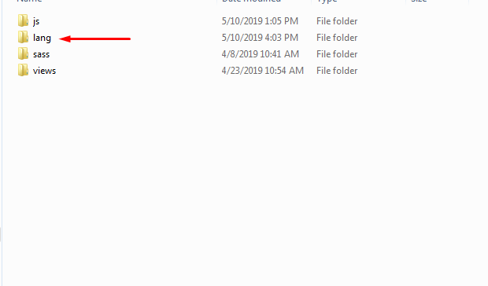
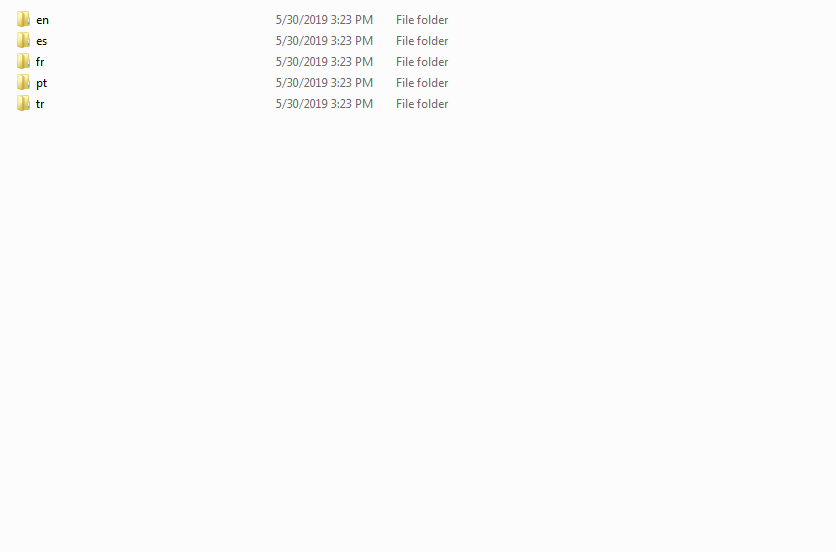
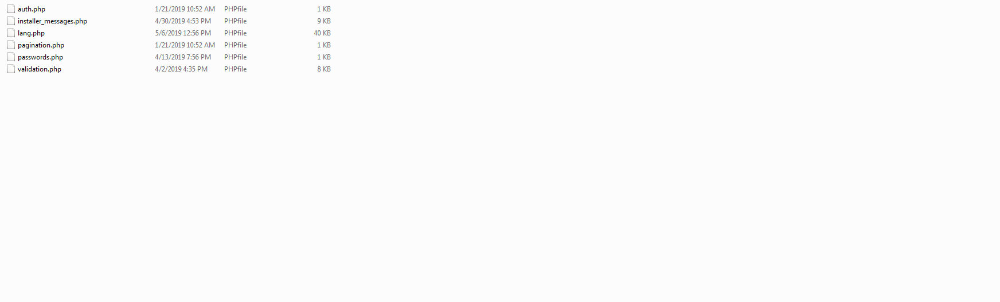
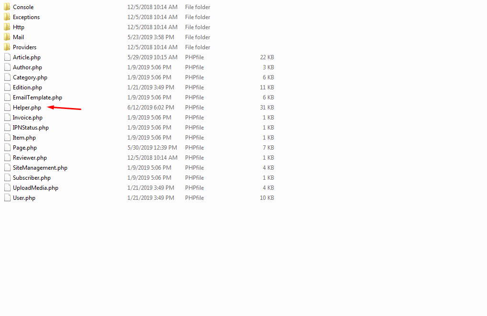
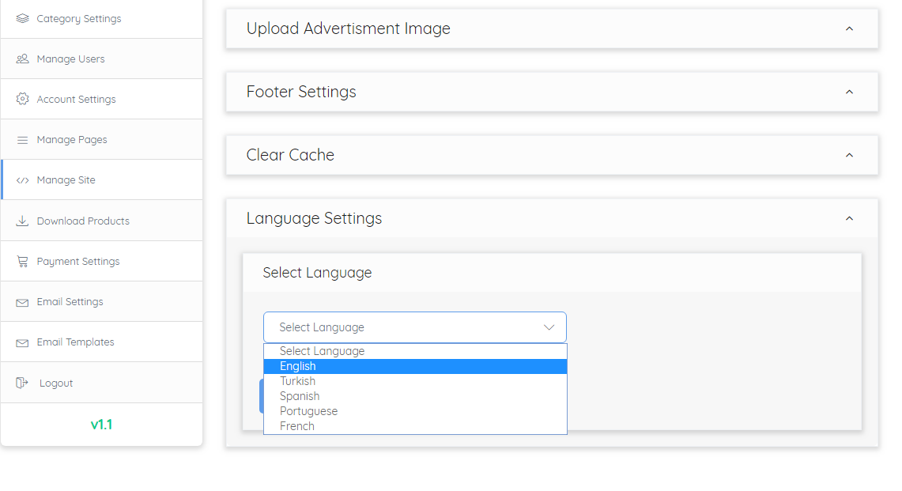
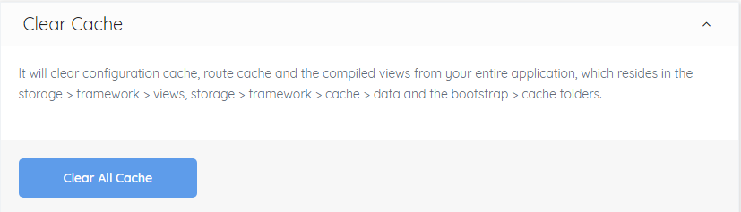

Translation of strings is termed as localization in laravel official documention.
You can change language according to your need in journals by following the steps given below.
Go to project main folder you will find "resources" folder e.g journals > resources

There you will find a folder named "lang"

In which there are language folders like "en", "es" etc.

Create your language folder with its code name e.g "en", "es" etc.
Copy all the files from "en" folder and paste it in your folder that you want your application to be translated in.

All files contain the translated strings of the whole application. You have to translate all files manually.
Go to project main folder (root) -> app folder -> Helper.php

Open Helper.php find (getTranslatedLang) function add your created language in list e.g 'fr' => array(
'code' => 'fr',
'title' => 'French',
),
Go to Admin Dashboard -> Manage Site you will find "Language Settings" option if you do previous step correctly you will find your language in the dropdown as shown in image below.
select your language and click save.

If language not change then go to Admin Dashboard -> Manage Site from the menu > Cache clear and clear all the cache from there as shown in below image.

For more information regrading translation in laravel you can consult its documention Laravel Localization
Most Important steps in the creation of an email template are:
Select the email type you want your email to look like e.g New Article(Creation of new Article)
The list of email types and why they are used are given below
After selection of the email type you have to select the User Type for which the template is being created such
as
Author, SuperAdmin etc
After selection of the User type variables for that particular templates will be visible under the user type
field which you can use in the text editor to make your email more beautiful.
Every Variable description is given with them as shown in the image below.
List of Email Types and what they mean
New Article ------- When the new Article is created.
Assign Reviewer ------- When the Article is assigned to the reviewer.
Resubmit Article ------- When Article is resubmitted.
Reviewer Feedback ------- When reviewer gives feedback.
Admin Feedback ------- When admin gives feedback.
Publish Edition ------- When new Edition is published.
Add New User ------- When new User user is created.
Change Password ------- When the password is changed.
Update User Data ------- When the new Article is created.
New Order Received ------- When the new Order is received.
Successful Order ------- When the order is successfully placed.
Major Revision Editor Feedback ------- Admin feedbackback in case of major revision.
Accepted Articles Editor Feedback ------- Admin feedbackback in case of accepted article.
Rejected Articles Editor Feedback ------- Admin feedbackback in case of rejected article.
Minor Revision Articles Editor Feedback ------- Admin feedbackback in case of minor revision. View Image 2
This is the email settings of your company account from which you will send or receive emails.
Credentaials should be same as you have on live. The email credentials will be the be automaically configured in
the .env file
Remember
Email settings are required for your system. Until you set email settings a warning message will always
show on the top right corner of all pages. View Image 3
Admin/Editor
Manage Articles
You can manage your articles from here. View Image 1
Just click on the Detail button and you will be redirected to the Detail page where you can